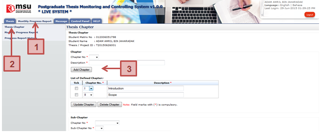
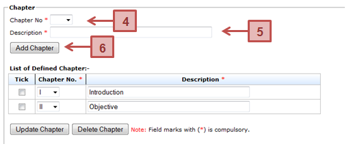

Figure 22: Thesis Chapter

Figure 23: Add Chapter
Prerequisite
- Senate has approved the thesis proposal
- Supervisor / Co-Supervisor has accepted the invitation
Steps
- Click on the Monthly Progress Report tab on the Top panel
- Click on the Thesis Chapter menu on the Left panel
- System will display the thesis chapter page on the Working Area panel.
- To add thesis chapter, select chapter number from the Chapter No dropdown field.
- Then enter the description of the chapter into the Description field.
- Click Add Chapter button to save the chapter.
Next Action
The student can proceed with the creation of thesis sub-chapter or submission of the monthly progress report to the Supervisor.
Warning
System will prompt a notification message if the addition of the thesis chapter without selecting the chapter number and providing its description.
Note
None
Created with the Personal Edition of HelpNDoc: Write eBooks for the Kindle